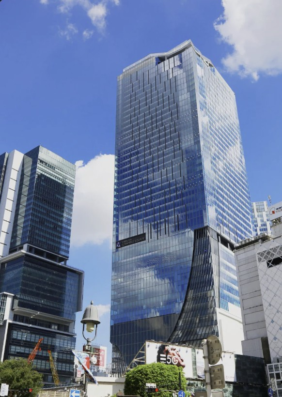

시부야 스크램블 교차로 전경

시부야역 앞 하치코 동상

시부야 스카이 전망대에서 본 도심 풍경

네온사인으로 빛나는 시부야의 밤거리
위치 / 접근
도쿄 시부야구 시부야 2-24-12. JR 시부야역 하치코 출구 바로 앞에 위치하며, 도쿄 메트로 긴자선·한조몬선·후쿠토신선 등 여러 노선이 교차하는 교통의 요지이다.
시부야 스크램블 교차로
세계에서 가장 붐비는 교차로 중 하나로, 신호가 바뀌면 약 3천 명의 보행자가 동시에 횡단한다. 인근 카페나 스타벅스 2층에서 내려다보는 장면은 시부야의 상징적인 풍경으로 꼽힌다.
하치코 동상
충견 하치코는 매일 주인을 기다리며 시부야역 앞에 나타났던 실화의 주인공으로, 일본 내에서 ‘충성’과 ‘우정’의 상징으로 사랑받는다. 시부야역 광장에 위치해 관광객들이 반드시 찾는 명소다.
쇼핑 & 먹거리
시부야109, 파르코, 히카리에, 스크램블 스퀘어 등 트렌드 중심의 쇼핑몰이 밀집해 있다. 센터가이 거리에는 다양한 맛집과 바가 있어 밤에도 활기차다.
여행 팁
- ‘시부야 스카이’에서 교차로 전경을 내려다보면 최고의 야경을 감상할 수 있다.
- 하치코 광장은 만남 장소로 붐비므로 대체 약속 장소를 미리 정해두자.
- 야간에는 소지품 관리 주의.